Sistemas Inteligentes
Redes Neuronales Artificiales
Claudio Vaucheret
Created: 2024-08-07 mié 18:59
Introducción
¿Qué vimos?
- Clases de Aprendizaje
- Supervisado
- Árboles de decisión
- SVM
- Evaluación de los Modelos
- No Supervisado
- Clustering
- K-means
- Clustering Jerárquico
- Evaluación de los Modelos
- Por refuerzo
- Supervisado
- Hoy: Redes Neuronales Artificiales
Inteligencia Artificial
- Simbólica: Hipótesis del sistema de símbolos físicos
- Allen Newell y Herbert Simon.
- Subsimbólica:
- Modelos Emergentes
- basados en la evolución, las soluciones potenciales compiten y evolucionan.
- Propiedades: masivamente paralelos, comportamiento complejo evoluciona a partir de comportamiento simple.
- Ejemplo: algoritmos genéticos, vida artificial.
- Modelos Conexionistas
- basados en el cerebro, modela neuronas individuales y sus conexiones.
- Propiedades: paralelos y distribuidos.
- Ejemplo: redes neuronales
- Modelos Emergentes
Historia
Inicios

Warren Sturgis McCulloch (1898-1969) Neurólogo e Informático Estadounidense

Walter Harry Pitts (1923 - 1969) Lógico estadounidense que trabajó en el campo de neurociencia computacional.
1943: Escriben un trabajo en el que describen el primer modelo matemático para una red neuronal.
Hitos
- 1943-1949 Nacimiento teórico de las Redes Neuronales Artificiales - McCulloch & Pitts (1943), Hebb (1949)
- 1950's & 1960's Desarrollo optimista Minsky (50's), Rosenblatt (60's)
- 1970's Minsky & Papert muestran serias limitaciones
- 1980's & 1990's Renacimiento: nuevos modelos y técnicas, Backpropagation, Hopfield, redes recurrentes
- 2012 Aprendizaje en Profundidad, Redes Convolucionales,
- 2014 Redes Generativas Adversarias.
2017- Transformers y Procesamiento de Lenguaje Natural, Atencion.
Perceptron vs Multi Capa
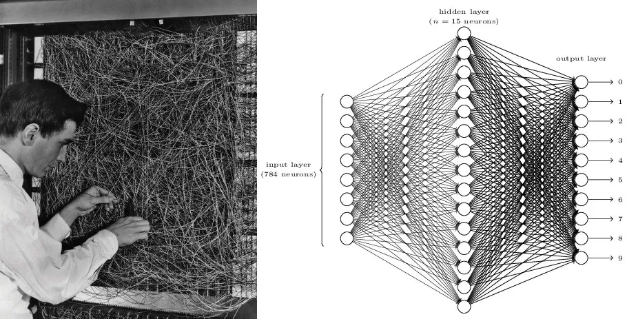
Motivación
De dónde surgió la idea
El cerebro tiene 100.000 millones de neuronas.
Neurona Natural
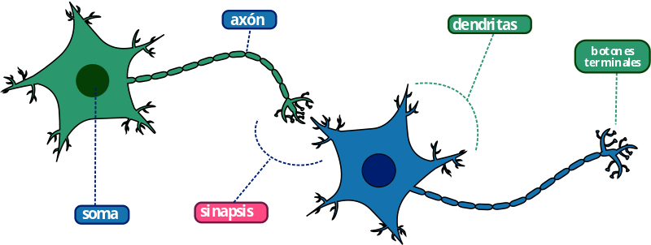
- Las dendritas recogen la señales de otras neuronas
- El Soma Procesa la información
- Los axones envían señales a otras neuronas
- las sinapsis son los puntos de conexión a otras neuronas
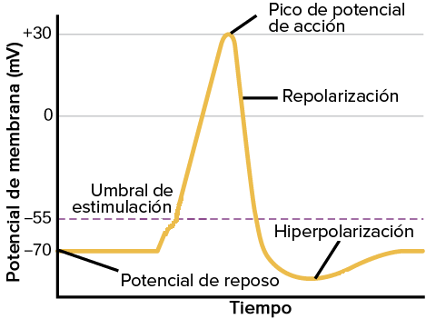
- Finalmente, si debe existir respuesta, se excitan neuronas eferentes que controlan músculos, glándulas u otras estructuras anatómicas.
- La señal se inicia cuando una neurona sensorial recibe un estímulo externo. Su axón se denomina fibra aferente.
- Esta neurona sensorial transmite una señal a otra aledaña, de modo que acceda un centro de integración del sistema nervioso.
- Las interneuronas, situadas en dicho sistema, transportan la señal a través de sinapsis.
Neuronas Artificiales
Neurona de McCulloch y Pitts
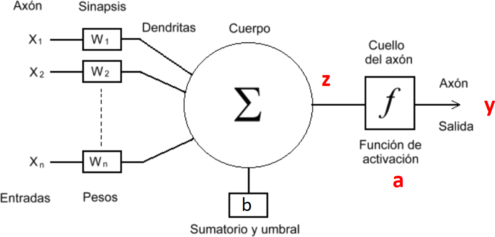
Para \(n\) entradas \((x_1,x_2,\ldots,x_j,\ldots,x_n)\)
\[z = b + \sum_{i=1}^{n}w_ix_i\]
\[ a = f(z) \left\{ \begin{array}{ll} 1 & z \ge 0 \\ 0 & z < 0 \end{array} \right. \]
o sea en su definición mas simple con dos entradas
\[ a = \left\{ \begin{array}{ll} 1 & \mathrm{si\ } b + w_1x_1 + w_2x_2 \ge 0 \\ 0 & \mathrm{si\ } b + w_1x_1 + w_2x_2 < 0 \end{array} \right. \]
siendo \(b + w_1x_1 + w_2x_2 = 0\) una recta que define la frontera de la decisión.
Supongamos \(w_1 = -1\) , \(w_2 = 2\) y \(b = 0\) tenemos la recta \(-x_1 + 2x_2 = 0\)
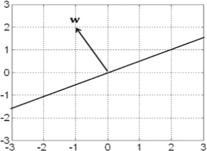
¿Qué ocurre cuando \(b \not= 0\)?
\[ W^T \times X + b = \left[ \begin{matrix} -1 & 2 \end{matrix} \right] \left[ \begin{matrix} x_1 \\ x_2 \end{matrix} \right] + b = -x_1 + 2x_2 + b = 0\]
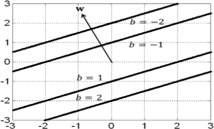
Resumiendo
- Frontera de Decisión: Una neurona perceptrón divide al espacio de entrada en dos para clasificar patrones.
- \(W\), los pesos sinápticos controlan la orientación de la Frontera de Decisión.
- El umbral o polarización \(b\) controla la traslación de la Frontera de Decisión.
Ejemplo
Supongamos que queremos clasificar ananás y manzanas y que disponemos de dos atributos: peso y color promedio.
| \(x_1\) = Peso | \(x_2\) = Color | Clasificación | Salida de la Neurona |
|---|---|---|---|
| 1.5 | -0.3 | ananá | -1 |
| 0.9 | 0.05 | ananá | -1 |
| 2.1 | 0.2 | ananá | -1 |
| 0.24 | -0.87 | manzana | 1 |
| 0.45 | -0.6 | manzana | 1 |
| 0.15 | -0.43 | manzana | 1 |
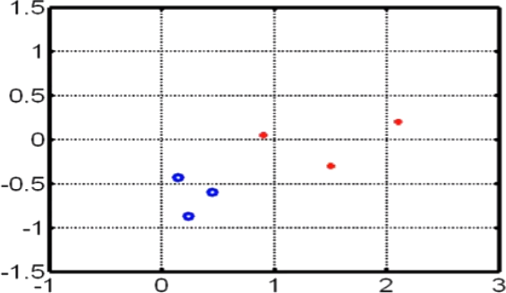
Rojo = ananá y Azul = manzana
¿Cuáles serían posibles valores para los pesos sinápticos y el umbral?
Elegimos \(-x_1 - x_2 + 0.5=0\)
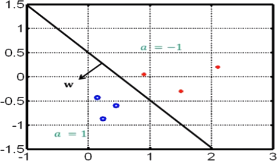
Voilá!!! Obtuvimos los pesos sinápticos y el umbral. \[\mathbf{w}=\Bigg[ \begin{matrix}-1 \\ -1 \end{matrix}\Bigg] \ \ \ b=0.5 \]
Perceptrón
Función de activación
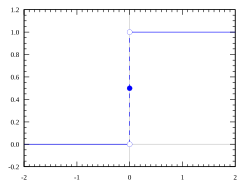
\[ f(n) = \left\{ \begin{array}{ll} 1 & n \ge 0 \\ 0 & n < 0 \end{array} \right. \]
Entrenamiento
sea \((x^1,y^1),\ldots,(x^r,y^r),\ldots,(x^N,y^N)\) un conjunto de entrenamiento
se ajustan los pesos con la regla de Hebb:
\[w_i(t + 1) = w_i(t) + \eta\sum_{r=1}^{N}(y^r - a^r)x_i^r\]
\[b(t + 1) = b(t) + \eta\sum_{r=1}^{N}(y^r - a^r)\]
Expresividad
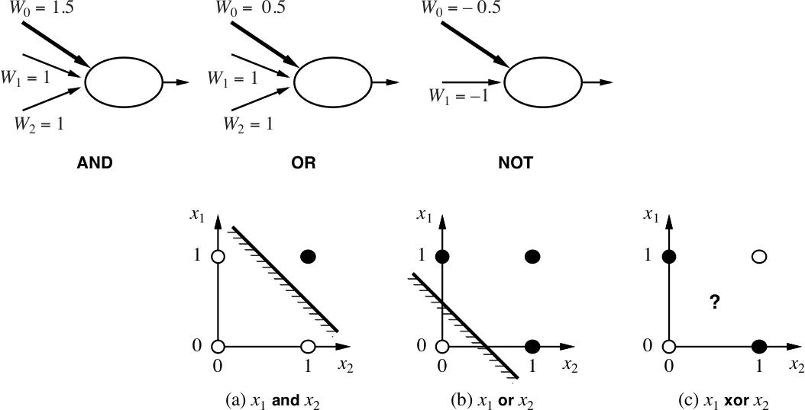
Modelo Bicapa
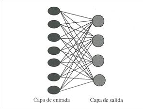
Rosenblatt en 1958 introdujo el perceptrón simple formado por dos capas, una de entrada con \(n\) neuronas y una de salida con \(m\) neuronas.
\[z_i = b_i + \sum_{j=1}^{n}w_{ij}x_j (i = 1\ldots m)\]
\[a_i = f(z_i)\]
la variable objetivo \(y^r\), donde \(r = 1\ldots N\) se convierte en un vector de \(m\) posiciones.
\[y^r = (y^r_i) \mathrm{\ con \ } i = 1\ldots m\]
Función de activación
\[f(z)=\sigma(z)= \frac{1}{1+ e^{-z}}\]
su derivada es muy simple:
\[y^\prime = \frac{dy}{dx}=\frac{e^{-x}}{(1+e^{-x})^2}\]
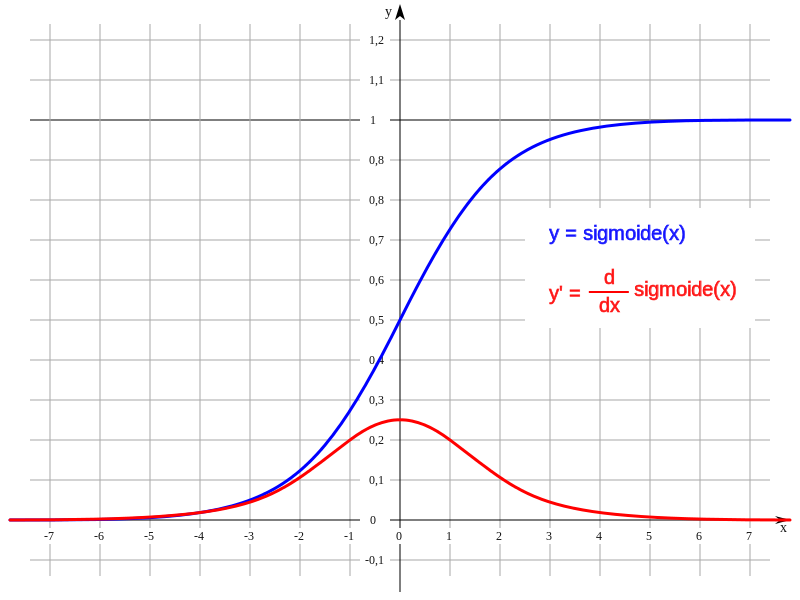
Entrenamiento
se basa en minimizar la función de errores al cuadrado por el procedimiento iterativo de gradiente de descenso. Donde la función de errores al cuadrado es:
\[C(b_i,w_{ij}) = \frac{1}{2} \sum_{r=1}^{N}(a_i^r - y_i^r)² (i = 1 \ldots m)\]
\[C(b_i,w_{ij}) = \frac{1}{2} \sum_{r=1}^{N}\left(\sigma\left(b_i + \sum_{j=1}^{n}w_{ij}x_j^r \right) - y_i^r\right)^2 (i = 1 \ldots m)\]
se sabe que el vector gradiente :
\[\Delta C(b_i,w_i) = (\frac{\partial C}{\partial b_i}, \frac{\partial C}{\partial w_{i1}},\ldots,\frac{\partial C}{\partial w_{in}})\]
va en la diraccion del mayor incremento de \(C\) en el punto del dominio \((b_i,w_i)\). para ir en el sentido del mayor decremento del error cuadrático se toma el valor negativo \(- \Delta C(b_i,w_i)\) el factor de aprendizaje \(\eta\) determina el tamaño del salto.
\[(b_i,w_i)[t+1] = (b_i,w_i)[t]- \eta \Delta C(b_i,w_i)\]
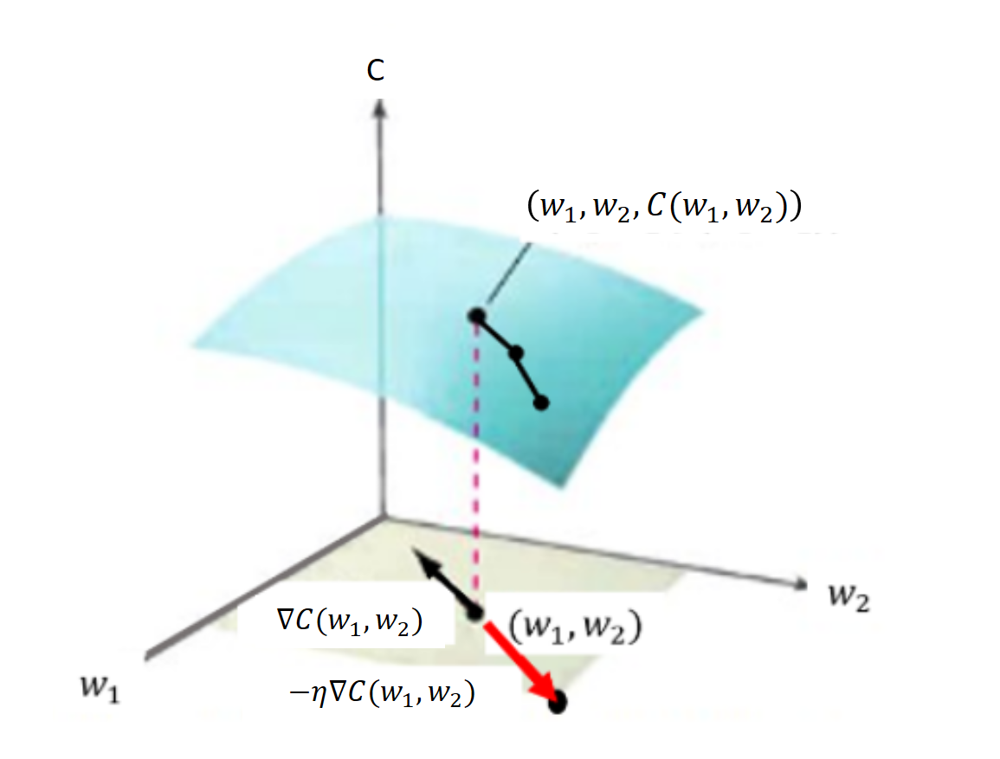
\[\frac{\partial C}{\partial w_{ij}} = \sum_{r=1}^{N}(a_i^r - y_i^r) \sigma'(z_i^r)x_j^r \mathrm{\ \ \ \ \ } i=1\ldots m\]
\[\frac{\partial C}{\partial b_i} = \sum_{r=1}^{N}(a_i^r - y_i^r) \sigma'(z_i^r) \mathrm{\ \ \ \ \ } i=1\ldots m\]
Resolución matricial
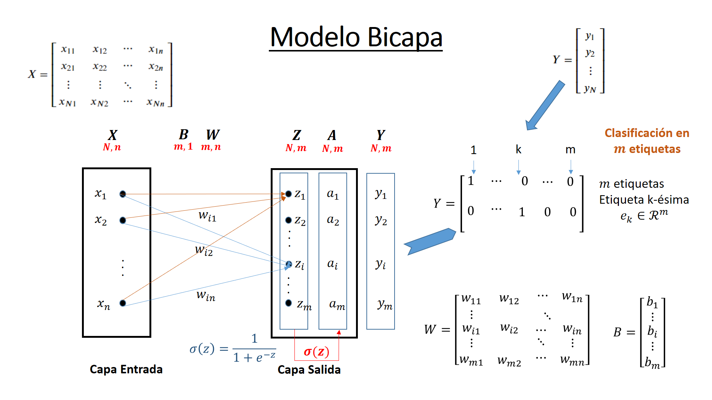
\[Z = B^T \oplus X \cdot W^T\]
\[A = \sigma (Z)\]
\[A - Y\]
\[\Delta = (A - Y) \odot \sigma'(Z)\]
\[W(t + 1) = W(t) - \eta \Delta^T \cdot X\]
\[B(t + 1) = B(t) - \eta \Delta^T \cdot \mathbf{1}\]
Modelo Multicapa
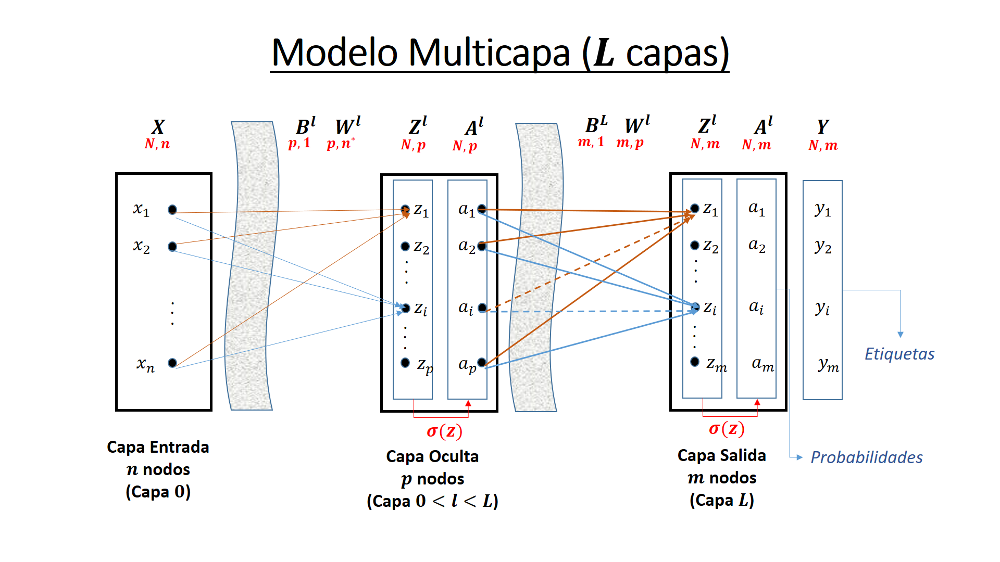
Retropropagación
El algoritmo de retropropagación que permite entrenar una red multicapa se introduce en 1970, pero no es hasta 1986 con el artículo de Rumelhart, 1986 cuando se aprecia su potencial
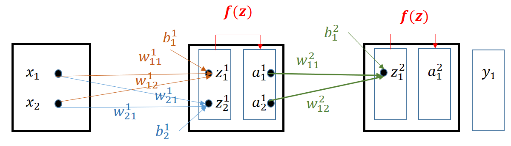
\[\frac{\partial C}{\partial w_{jk}^l};\frac{\partial C}{\partial b_j^l}\]
Para la capa \(1 \le l \le L\):
\[A^l = \sigma((B^l)^T \oplus A^{l-1} \cdot (W^l)^T) = \sigma(Z^l)\]
\[E = Y - A^L\]
\[\Delta^L = (Y - A^L) \odot \sigma'(Z^L)\]
\[\Delta^L = (\Delta^{l + 1} \cdot W^{l + 1}) \odot \sigma'(Z^L)\]
\[W^l(t + 1) = W^l(t) - \eta(\Delta^l)^T \cdot A^{l - 1}\]
\[B^l(t + 1) = B^l(t) - \eta(\Delta^l)^T \cdot \mathbf{1}\]
Otras Funciones de Activación
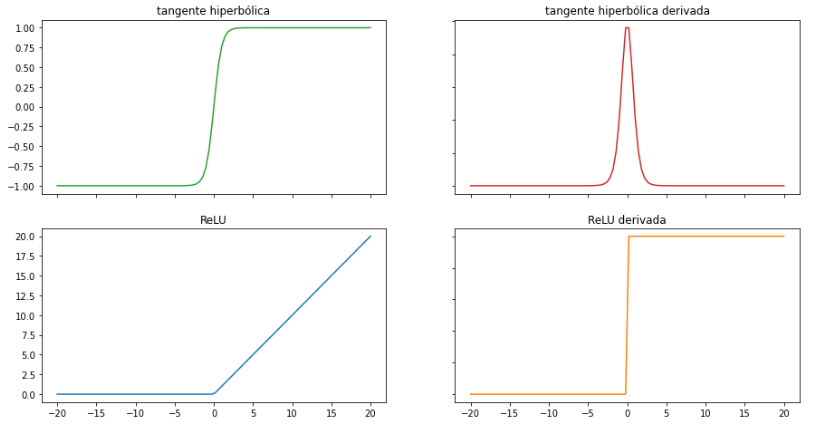
La función tangente hiperbólica (muy similar a la sigmoidea):
Satura y anula el gradiente. Lenta convergencia. Centrada en 0. Esta acotada entre -1 y 1. Se utiliza para clasificaciones binarias. Buen desempeño en redes recurrentes (que se utilizan para analizar series temporales).
La función ReLU (Rectified Lineal Unit):
Solo se activa si son positivos. No está acotada. Puede anular demasiadas neuronas. Se comporta bien con imágenes. Buen desempeño en redes convolucionales
Overfitting
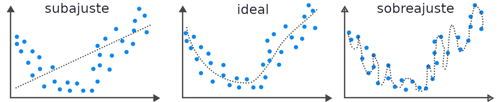
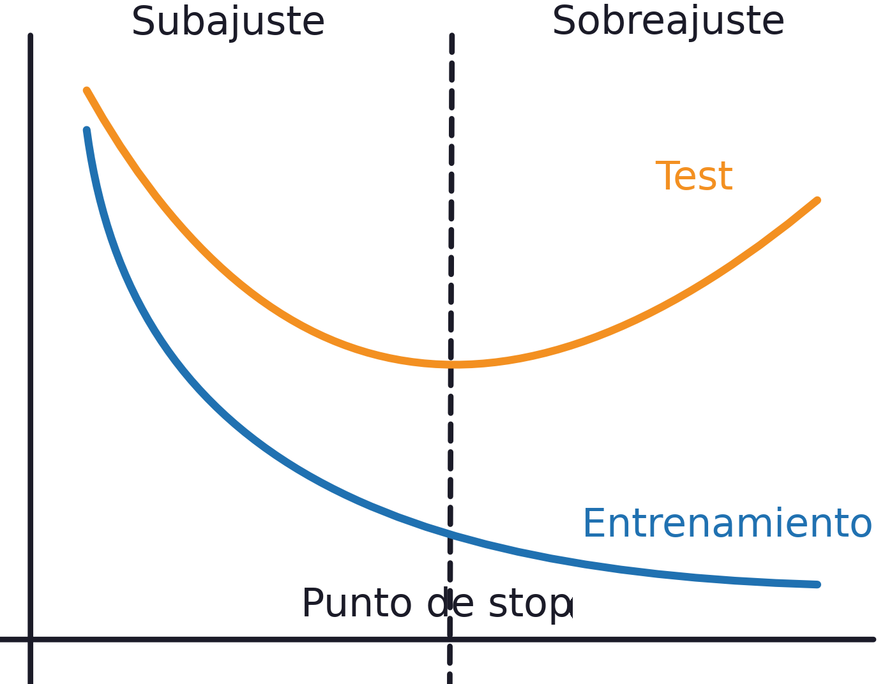